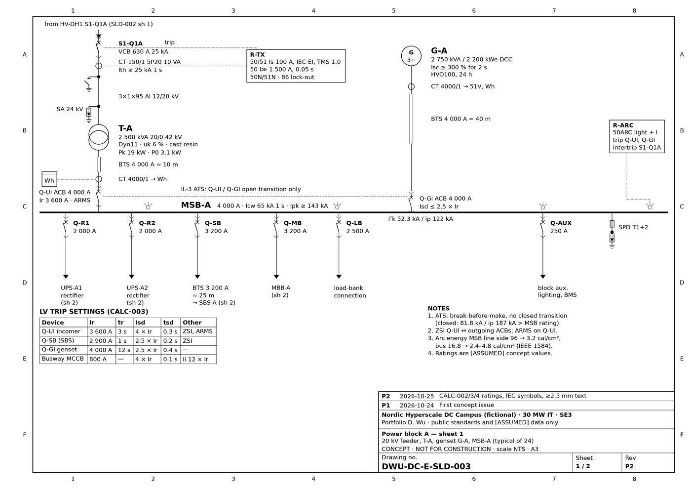
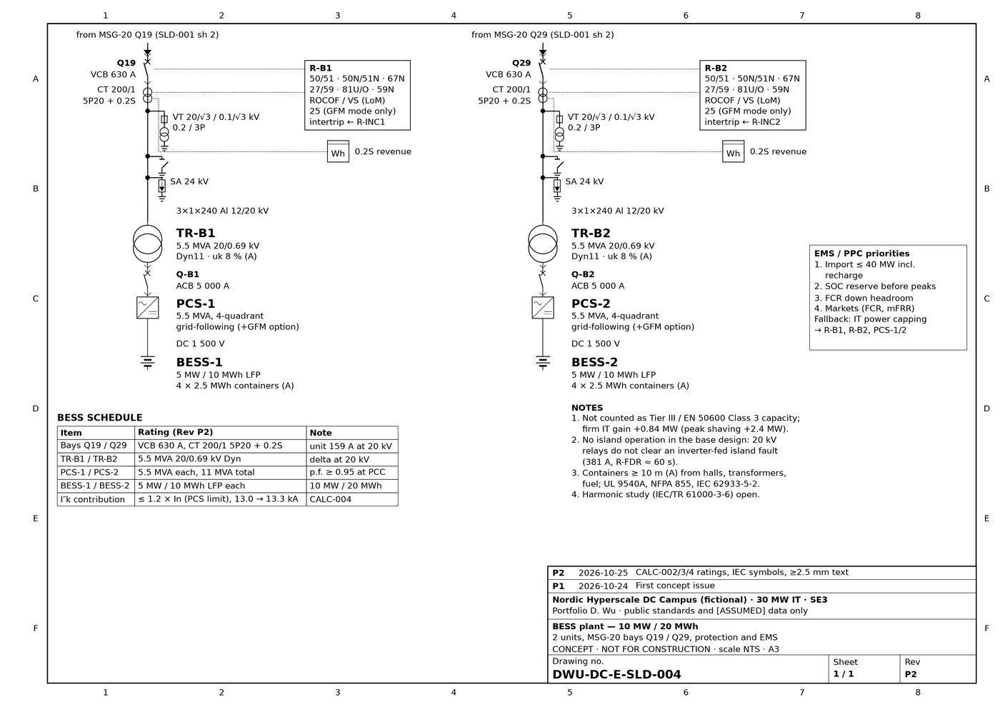
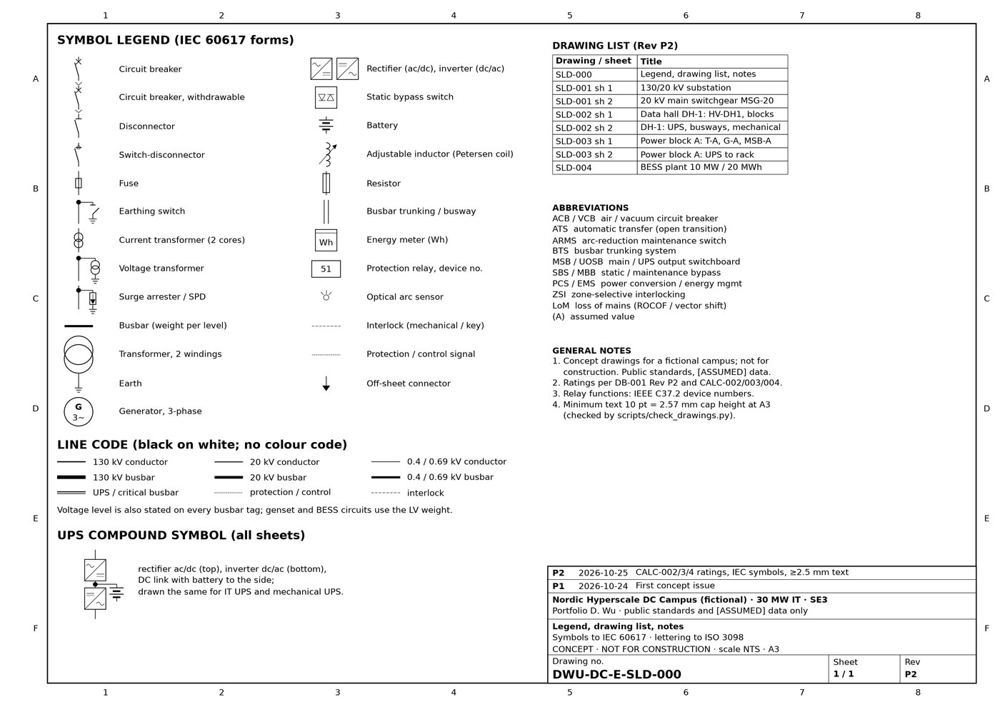

Portfolio / Project 01
DB-001 Rev P2 and an eight-sheet A3 single-line diagram set for the fictional 30 MW IT campus. Everything is generated from Python, so a rating change in the design basis is a one-line change in a sheet script.
Reduced previews. The full-resolution originals are in the repository.



Other projects: 02 Load & equipment sizing tool · 03 Short-circuit, protection & arc-flash study · 04 BESS in a grid-constrained data center